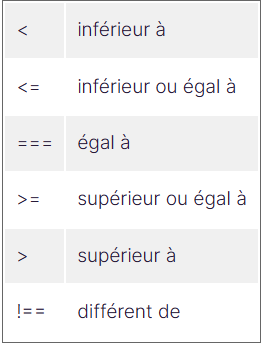

Maintenant que vous avez installé votre environnement de travail, revenons à notre mission ! Je vous propose de
construire notre projet pas à pas et de le découper en petits morceaux.
Alors, commençons par le cœur de notre application. Son mécanisme principal est la vérification d’un mot tapé au
clavier
par l’utilisateur. Le mot tapé doit correspondre au mot proposé par l’application.
Pour résoudre ce problème,
nous
allons utiliser des structures conditionnelles, et plus particulièrement : les
conditions.
Une condition est une structure conditionnelle qui contient un test dont le résultat sera vrai ou faux. Elle permet d'exécuter des instructions en fonction du résultat de ce test. On parle donc de structure conditionnelle, car un code ne s’exécutera qu’à condition que le test soit vrai ou faux.
Je n’ai rien compris o_O.
Je vous l’accorde, ce terme peut faire peur. Mais, dans la réalité, nous utilisons des conditions sans le savoir
dans
notre vie quotidienne ! 😃
Par exemple, lorsque vous allez à la boulangerie et que vous vous dites :
“S’il y a du pain aux noix, j’en achèterai, sinon, je vais juste prendre une baguette.”
Pour transformer cette phrase en langage de programmation, on écrira donc :
Si “présence de pain aux noix” == “vrai”
Alors “j'achète du pain au noix”
Sinon “j’achète une baguette”
La première ligne [Si “présence de pain aux noix” == vrai] est un test : c'est-à-dire, ce que l’ordinateur va vérifier si la condition est vraie.
Maintenant, revenons à notre mission ! D’après vous, comment formuler l’algorithme pour notre application AzerType ?
Pseudo code proposé :
SI “mot tapé par l’utilisateur” == “mot proposé”
ALORS “on augmente le score”
Et voilà, nous venons de définir notre algorithme ! Nous pouvons passer à sa rédaction ! 🥳
Pour rédiger une condition, vous devez :
Il existe deux principaux types de conditions en JavaScript :
Découvrons ensemble comment les utiliser ! 🚀
Ce morceau de code signifie :
SI (if, en angais) la condition est vraie, alors j’exécute le
premier bloc de code,
SINON
(else, en anglais) j’exécute le second.
La condition utilisée peut être un booléen (valant true ou false), ou une comparaison (exemple : variable === 42).
Revenons maintenant à notre projet pour rédiger notre premier test. 😃 Dans notre cas, nous cherchons à comparer le mot tapé par l’utilisateur à celui choisi par l’application.
Je crée ainsi une variable motTapeOk qui contiendra true ou false, et j’écris mon test en fonction : (cf fichier JavaScript)
Ici, motTapeOk est une variable de type booléen. Comme la variable vaut true (vrai), alors
JavaScript a exécuté
le
premier bloc de code, car la condition est validée. Le mot tapé est
correct, j’affiche donc
le message
correspondant.
Vérifions tout de même le résultat dans la console : (cf fichier JavaScript)
Je vous invite à modifier la valeur de motTapeOk, et remplacer true par false. Vous verrez alors l’autre portion
de code
s'exécuter !
Si je ne veux pas afficher de message quand l’utilisateur fait une erreur, je mets un else vide ?
Excellente question ! En fait, le else est optionnel. Vous pouvez donc simplement écrire : (cf fichier
JavaScript)
Si l’utilisateur a correctement tapé le mot, le premier bloc sera exécuté, sinon… eh bien pas de sinon. Le code s’arrête là. 🙂
Pour l’instant, nous avons manipulé un code simple. Nous ne comparons pas vraiment le mot de l’utilisateur avec
le mot
suggéré par l’application.
La première étape va donc être de demander un mot à l’utilisateur et de
mettre ce mot dans une variable.
Pour
cela, le
plus simple est d’utiliser une nouvelle instruction : prompt.
Voilà ce que cela donne dans le code : (cf fichier JavaScript)
Super, nous sommes désormais capables d’interagir avec l’utilisateur ! 🥳
OK ! C’est quoi la suite, alors ?
L’étape suivante est de réellement comparer le mot de l’utilisateur, qui est stocké dans la variable motUtilisateur, avec le mot de l’application que nous allons stocker dans la variable motApplication.
Pour comparer ces deux mots, nous allons utiliser des opérateurs de comparaison :
Il existe également les opérateurs == et != pour comparer des valeurs entre elles. Cependant, il n’est pas
recommandé de
les utiliser, car ils ne permettent pas de tester en une seule opération la valeur et le type de données de la
valeur.
Vous pourrez néanmoins être amené à en trouver dans le code d’autres développeurs.
Notez bien également la différence entre = et === :
a = 42 signifie que l’on met la valeur 42 dans la variable a ;
a === 42 signifie que l’on compare la valeur a et la valeur 42, pour savoir si ce sont les mêmes ou pas.
Dans notre cas, nous allons utiliser l’opérateur === .
Il va nous permettre de comparer si deux éléments ont
exactement
la même valeur. Nous allons donc vérifier si les deux mots sont les mêmes. (cf fichier JavaScript)
Et voilà, le tour est joué ! N’hésitez pas à revoir ces démonstrations dans la vidéo ci-dessous : ///
Il arrive parfois que l’on souhaite imbriquer beaucoup de if. Typiquement, cela arrive quand on veut faire un traitement différent pour chaque valeur d’une même variable, par exemple. Comme cela rend le code difficile à lire, nous utiliserons dans ce cas la structure conditionnelle switch/case.
Il arrive parfois que l’on souhaite imbriquer beaucoup de if. Typiquement, cela arrive quand on veut faire un traitement différent pour chaque valeur d’une même variable, par exemple. Comme cela rend le code difficile à lire, nous utiliserons dans ce cas la structure conditionnelle switch/case. (cf fichier JavaScript)
Mais… Avouez que le résultat n’est pas facile à lire 😱. Heureusement, on peut utiliser switch en combinaison avec case pour remédier à cela.
On procède alors en deux étapes :
Dans notre exemple, on écrira donc : (cf fichier JavaScript)
Ici, je teste motUtilisateur :
Heuu… Et ça veut dire quoi “break”, dans ce morceau de code ?
Bien vu ! 😉 Le break (“casser”, en anglais) sert à arrêter le code. Dans notre exemple, si l’utilisateur à écrit “Mécréant” et qu’il n’y a pas de break, alors le console.log(“Soyez gentil !”) qui est lié au mot “Vilain”, sera exécuté aussi.
Et maintenant, entraînez-vous à rédiger des conditions en JavaScript dans votre fichier script.js.
Dans ce chapitre, vous avez appris à tester un mot dans notre application. Votre objectif est maintenant d’en
tester
trois à la suite, et toujours pas à pas ! 😉
Ce tableau contient trois mots que l’utilisateur devra taper au clavier : “Cachalot”, “Pétunia” et “Serviette”.
Si c’est le cas, on augmente la valeur de score de 1.
Vérifiez avec des console.log si le score final est correct.
Recommencez une troisième fois pour la dernière case du tableau !
Vous remarquerez peut-être que certaines portions de code vont beaucoup se ressembler dans cet exercice.
Pas
d'inquiétude, c’est normal à ce stade ! 😉